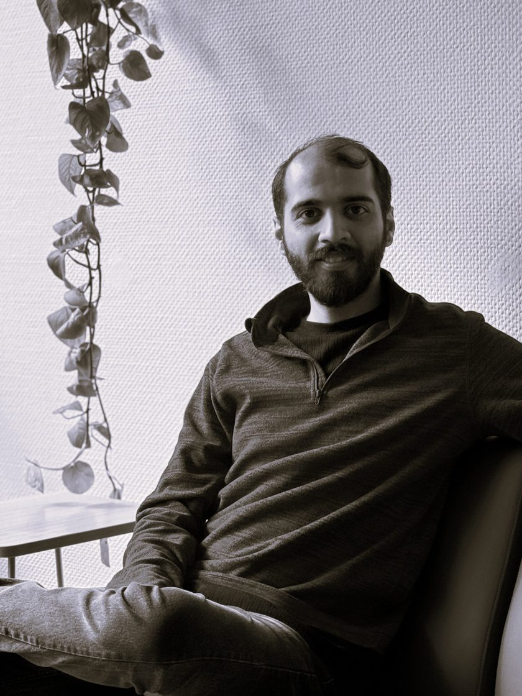

Architecte de formation, je construis aujourd'hui mon profil autour du BIM, de la conception numérique et de la gestion de projet.
Passionné de mathématiques et de géométrie depuis le lycée (filière mathématiques-physique, olympiades de mathématiques et d'informatique), j'ai développé très tôt une vision spatiale forte, ce qui m'a naturellement conduit vers l'architecture. Pendant mes études à l'Iran University of Science and Technology, j'ai découvert le plaisir de coder appliqué à la conception — Revit, Rhino, Grasshopper, Arduino — un intérêt qui n'a fait que se renforcer depuis.
Mon expérience sur la raffinerie d'Ispahan m'a permis de comprendre les enjeux réels de l'exécution : interfaces techniques, coordination entre disciplines, suivi des délais, qualité des informations et communication entre les acteurs du projet.
J'aime particulièrement le travail par projet : structurer, planifier et coordonner des équipes jusqu'à la livraison.
Basé à Nancy depuis 2025, je suis actuellement étudiant en français à l'Université de Lorraine et je prépare une entrée en master pour la rentrée 2027, afin de réunir architecture, conception numérique, BIM et gestion de projet.